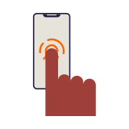

Uw vraag, en iemand die ze beantwoordt
Begin een onlinegesprek, bel ons of maak een afspraak in een kantoor. Korte vragen lossen we meteen op, grotere dossiers nemen we rustig door.

Kies hoe u ons bereikt
Een onlinegesprek is de snelste weg voor een korte vraag over uw rekening, uw kaart of een betaling. Tijdens de kantooruren zit er meteen een medewerker voor u klaar.
Belt u liever? Aan de telefoon krijgt u iemand die uw dossier voor zich heeft. Voor een vraag die uitleg vraagt, maken we een afspraak in een kantoor bij u in de buurt.
- Onlinegesprek: het vlugste antwoord op een korte vraag
- Telefoon: voor dringende zaken, zoals een kaart die u niet meer vindt
- Afspraak: voor krediet, beleggen of een dossier dat tijd vraagt
- Buiten de kantooruren laat u een bericht achter, dan bellen wij u terug
De sectie zet de snelste weg naar een medewerker vooraan en houdt dezelfde volgorde aan op een gsm en op een groot scherm, zodat de belofte van een vlot antwoord op elk toestel klopt.
Zelf regelen, zonder te wachten
Een deel van de vragen hoeft u niet te stellen. In de app van ING ziet u wat er op uw rekening gebeurt, past u limieten aan en blokkeert u een kaart in enkele tikken.
Zo verliest u geen tijd met wachten aan de lijn. Lukt iets niet in de app, dan neemt u daarna contact op en kijken we samen verder.
- Kaart kwijt of gestolen: blokkeer ze meteen in de app
- Limieten voor overschrijvingen en betalingen aanpassen
- Rekeninguittreksels en documenten downloaden
- Een bericht nalaten als het buiten de kantooruren is
Uw dagelijkse limiet, in gewone taal
Op elke rekening geldt een maximum dat u per dag kunt overschrijven. Bij ING staat die daglimiet standaard op [MONTANT]. Dat cijfer bepaalt hoeveel u op één dag van uw rekening naar een andere rekening kunt sturen. Het zegt niets over het bedrag dat op uw rekening staat.
U vindt uw limiet in de app bij de instellingen van uw rekening, en u kunt ze daar zelf aanpassen. Wilt u een groter bedrag overschrijven of de limiet blijvend verhogen, dan leggen we u uit welke stappen daarvoor nodig zijn.
- Daglimiet voor overschrijvingen: [MONTANT] per dag
- Aanpassen doet u zelf in de app, binnen de grenzen van uw profiel
- Betalen met de kaart heeft een eigen limiet
- Voor een blijvende verhoging belt u ons of komt u langs
Deze sectie plaatst de dagelijkse limiet en de praktische voorwaarden van alledaags gebruik in gewone taal meteen naast de rekening, zodat de klant de cijfers kent voor hij een betaalopdracht geeft.
Een gesprek bij u in de buurt
Sommige vragen vragen meer dan een paar berichten. Voor krediet, beleggen of een dossier dat uitleg nodig heeft, zit u beter tegenover iemand die uw situatie kent.
U maakt zelf een afspraak en kiest de dag, het uur en het kantoor. Zo weet u vooraf wie u ziet en waarover het gaat.
- Neem uw identiteitskaart mee
- Breng de documenten mee waarover u vragen hebt
- Zeg vooraf waar het over gaat, dan staat de voorbereiding klaar
- Duurt het gesprek langer? Dan nemen we daar de tijd voor